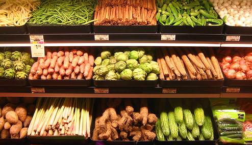
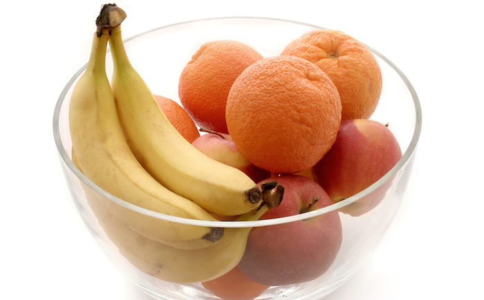
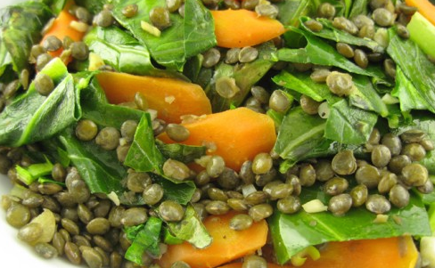

-
5 · 22 · 2014 | Fuel, Healthy Lifestyle
Weekly Wellness Links
This week in wellness links: tips for better sleep, how to eat best for you, bridging the breakfast-lunch gap and having a healthier relationship with the scale. 1. In honor of Better Sleep Month, here are 6 relaxation tips to help you sleep better from Huffington Post Living. 2. Don’t...
Keep Reading
-
5 · 20 · 2014 | Fitness, Fuel
Eating for Optimal Muscle Recovery: Carbohydrates Are Not the Enemy
By Cyrus Khambatta — FitStar Contributor In my last article What Happens to Muscles After Exercise? I wrote about what happens to your body in the post-exercise state. In that article, I explained how tissues across your body are affected by exercise, and how your muscle acts like a nutrient sponge immediately following...
Keep Reading
-
5 · 18 · 2014 | Fuel
How To Eat Healthy Without A Local Farmers Market
 By Darya Rose — FitStar Advisor Not everyone is blessed with the kind of produce we have here in California, but that shouldn’t prevent you from eating healthy, delicious food year round. Although the local food movement is awesome and doing a tremendous amount to help people make better food...
Keep Reading
-
5 · 15 · 2014 | Fitness, Fuel, Healthy Lifestyle
Wellness Links of the Week
 This week in wellness links: spring dinners in 30 minutes or less, the history of the burpee, how to stay focused on your goals during the weekend and a baja fish taco recipe that is both delicious and nutritious. Enjoy! 1. For the busy FitStar, here are 10 healthy, spring...
This week in wellness links: spring dinners in 30 minutes or less, the history of the burpee, how to stay focused on your goals during the weekend and a baja fish taco recipe that is both delicious and nutritious. Enjoy! 1. For the busy FitStar, here are 10 healthy, spring...
Keep Reading
-
5 · 11 · 2014 | Fuel
Should I Exercise on an Empty Stomach?
 By Lori Rice – FitStar Contributor Some of us can down a meal 30 minutes before an intense workout and feel great, but others can’t have a bite within hours of exercising. Meanwhile research and the media bombard us with tips to exercise on an empty stomach or eat only...
Keep Reading
-
5 · 8 · 2014 | Fitness, Fuel, Healthy Lifestyle
Wellness Links of the Week
This week in wellness links: amazing vacation destinations, how to get better sleep, getting back into your fitness routine and making a light, yet delicious margarita. 1. Looking to plan your summer vacation? These 17 amazing fitness vacations from Greatist give a whole new meaning to #fitanywhere. 2. May is Better Sleep Month! Here...
Keep Reading
-
4 · 15 · 2014 | Fuel
How to Blend Up the Best Green Smoothie
 By Lori Rice — FitStar Contributor Green smoothies have redefined healthy drinks by challenging the guidelines of what should be eaten and what should be sipped. Many people can’t quite embrace the idea of enjoying their leafy greens sweet and blended versus savory and sautéed. In case you’ve tried adding...
By Lori Rice — FitStar Contributor Green smoothies have redefined healthy drinks by challenging the guidelines of what should be eaten and what should be sipped. Many people can’t quite embrace the idea of enjoying their leafy greens sweet and blended versus savory and sautéed. In case you’ve tried adding...
Keep Reading
-
4 · 8 · 2014 | Fuel
Benefits of a High Protein Breakfast
 By Lori Rice — FitStar Contributor My journey through the ups and downs of healthy eating has led me to a lot of high carbohydrate breakfasts. It’s always been complex carbs like oatmeal, whole wheat toast and fruit, but insignificant amounts of protein only made an appearance in a dollop...
By Lori Rice — FitStar Contributor My journey through the ups and downs of healthy eating has led me to a lot of high carbohydrate breakfasts. It’s always been complex carbs like oatmeal, whole wheat toast and fruit, but insignificant amounts of protein only made an appearance in a dollop...
Keep Reading
-
3 · 29 · 2014 | Fuel
10 Tips For Eating Healthy On A Budget
 By Darya Rose — FitStar Advisor 1) Cook at home. The most important change I made to save money was to turn cooking at home into my default option rather than rely on neighborhood eateries as my go-to cop out. Eating out is expensive, no matter which way you cut...
Keep Reading